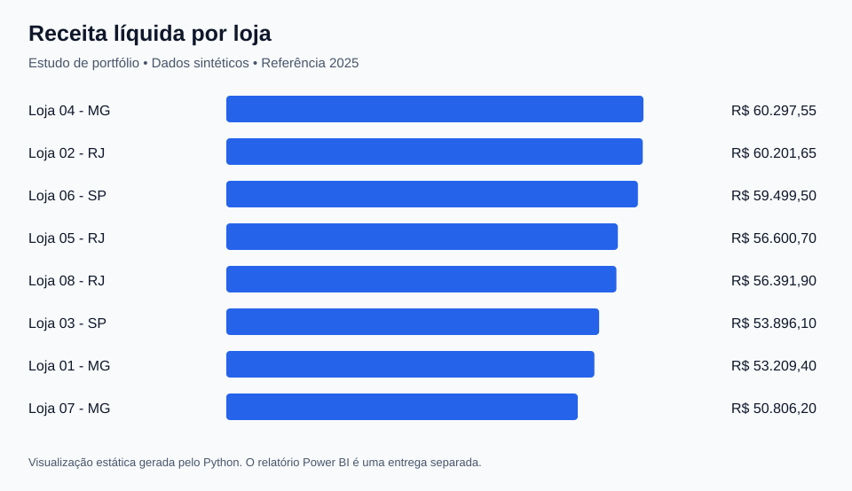
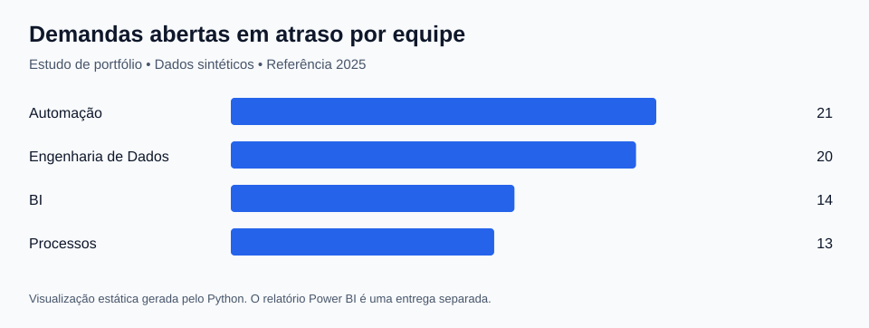
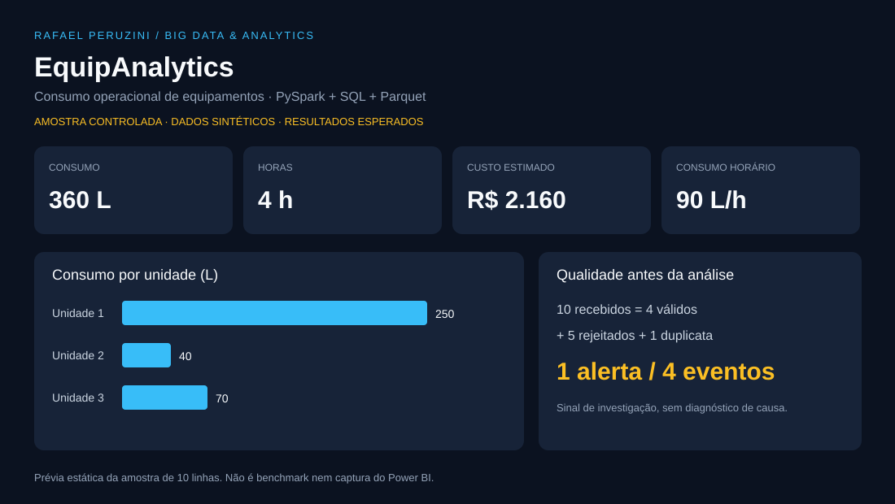

Painéis em Power BI
Transforme uma base de dados em indicadores de vendas, custos, produtividade ou acompanhamento de projetos.
- Tratamento e organização da base
- Indicadores e filtros acordados
- Arquivo editável e orientação de uso
POWER BI · EXCEL · SQL · PYTHON
Organizo planilhas, automatizo relatórios e crio painéis de indicadores para você acompanhar o negócio com mais clareza.
Atendimento remoto · Escopo definido antes de começar
COMO POSSO AJUDAR
Transforme uma base de dados em indicadores de vendas, custos, produtividade ou acompanhamento de projetos.
Reduza etapas manuais na preparação de relatórios a partir de arquivos padronizados.
Investigue um problema definido em uma planilha, consulta ou painel existente.
O orçamento considera a base, a complexidade e o resultado esperado. Prazo, entregáveis e rodada de ajustes são definidos na proposta.
PORTFÓLIO
Estudos demonstrativos com dados sintéticos. As prévias são imagens estáticas; os detalhes e arquivos estão no GitHub.

Como evoluem receita e margem? Quais lojas e categorias concentram os resultados?
Estudo com tratamento de dados, modelo e projeto editável do Power BI. Inclui regras para conferir os indicadores.
Ver estudo e arquivos
O que está em aberto? Onde estão os atrasos? Como acompanhar a carteira por equipe?
Indicadores de backlog, situação e prazo, com critérios documentados para interpretação dos resultados.
Ver estudo e arquivos
Como investigar consumo de equipamentos e impedir que dados inválidos contaminem os indicadores?
Processamento com PySpark e SQL, separação de erros e agregados para BI. Validação registrada: 7 testes aprovados e 100 mil eventos sintéticos em uma única máquina.
Ver estudo e validaçãoDO PRIMEIRO CONTATO À ENTREGA
Conversamos sobre o problema, as fontes e o que você precisa acompanhar.
Você recebe a proposta com escopo, prazo, valor e critérios de aceite.
Desenvolvo a solução e confiro os resultados com as regras combinadas.
Você revisa a entrega e recebe os arquivos e as orientações de uso.
QUEM ESTÁ POR TRÁS DAS ENTREGAS
Tenho formação em Engenharia de Minas e Ciência de Dados e experiência profissional em planejamento, Business Intelligence, indicadores e melhoria de processos, com trajetória na CSN e no FGV IBRE.
Conecto a análise de dados às necessidades da operação: entender a pergunta, conferir a informação e apresentar um resultado útil para a decisão.
VAMOS CONVERSAR
Conte qual é o problema, onde estão os dados e se existe um prazo desejado. Com essas informações, avaliamos o escopo da entrega.
O botão abre seu aplicativo de e-mail. Se preferir, copie o endereço.